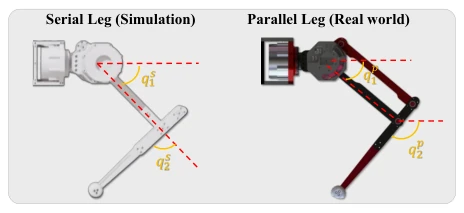
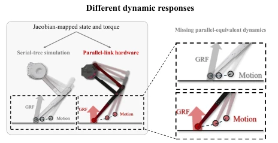
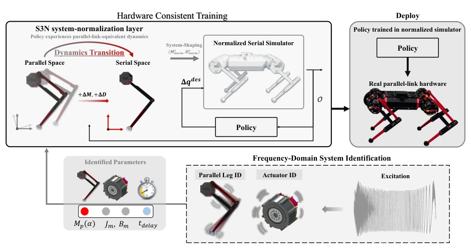
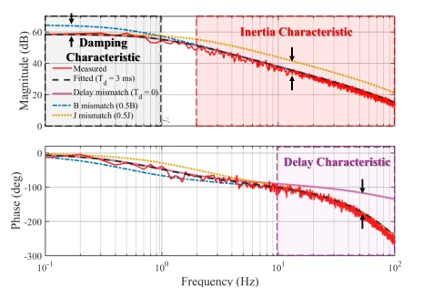
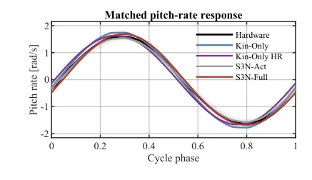
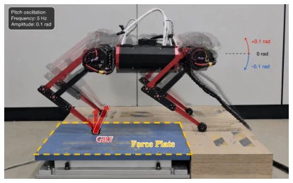

This paper gives a 'physics lesson' on Sim-to-Real transfer for parallel-link legs. The authors keenly point out that existing Jacobian matrix-based mapping methods (Kin-Only), while handling kinematics, discard the parallel link's core 'inertia coupling' and 'damping redistribution' into the trash, causing the robot in the simulator to resemble an underfed paper doll that exposes itself as soon as it lands. The proposed S3N method, although sounding like patching the simulator, indeed recovers the missed physical characteristics through system identification, with significant effects. However, a critique: this method relies too heavily on system identification; if hardware parameters are not measured accurately, S3N may directly become 'garbage in, garbage out'; and it only patches inertia and damping, while 'hard bones' like Coriolis force, friction, and link gravity remain ignored; for robots pursuing ultimate dynamic performance, this patch may not be big enough.
In learning-based control, using serial-tree surrogate models to simulate parallel-link legs (parallel-link leg) is the mainstream practice, because it can reuse existing tree-based simulation and reinforcement learning pipelines. However, this simplification brings serious dynamic mismatch. Traditional Jacobian mapping methods (Kin-Only) only retain kinematic constraints and virtual work relations, but completely ignore the redistribution of actuator inertia and damping caused by coordinate transformation, as well as the simplified link residual inertia [13]-[16]. This structure-induced dynamic gap causes the robot in the simulator to fail to reproduce the contact force (GRF) and joint acceleration response of real hardware, causing a serious Sim-to-Real Gap. Although Domain Randomization can improve robustness, it cannot explicitly recover the missing coupling structures and inertia characteristics [21]-[23]. Furthermore, Constraint-Based Closed-Loop Modeling (CBCM) retains topology, but the numerical solver settings are difficult to directly correspond to physical parameters, and the computational overhead is large [7], [11]. Therefore, there is an urgent need for a method that can explicitly recover key dynamic characteristics of the parallel mechanism while retaining the advantages of serial-tree topology.

Fig. 2. Coordinate definitions for the serial-tree simulator and the physical parallel-link leg.

Fig. 1. Problem formulation for a parallel-link mechanism modeled by a serial-tree surrogate. Kin-Only preserves Jacobian-mapped states and torques but not the closed-chain dynamics, leading to sim-to-real discrepancies in motion and GRF.
The paper proposes a Simulator-side System Normalization (S3N) framework, aiming to recover the dynamic characteristics of parallel links in serial-tree simulators. The overall process is divided into four stages: hardware identification, normalization construction, policy training, and deployment. First, dynamic parameters at the actuator level and whole-leg level are obtained through hardware Frequency Response Function (FRF) identification. The core innovation lies in two normalization variants: S3N-Act and S3N-Full. S3N-Act utilizes the principle of kinetic energy invariance to 'pull back' actuator inertia and damping under the parallel coordinate system to the serial coordinate system through Jacobian matrix transformation, calculates the missing coupling terms (∆M_act, ∆D_act), and injects them into the simulator as additional compensation torques, solving the inertia redistribution problem caused by coordinate transformation. S3N-Full goes further on this basis, by subtracting the identified actuator inertia from the total whole-leg inertia, separates the residual link inertia (∆M_link), and also adds it to the simulator dynamic equations, thereby completely reproducing the total inertia characteristics of the physical parallel leg. This method is implemented in the Isaac simulation environment, by modifying the inertia matrix and damping matrix in the dynamic equations, enabling the policy to experience dynamic responses consistent with real hardware during training, without modifying the simulator's underlying topology structure.

Fig. 3. Simulator-side dynamics normalization with S3N. All variants retain the serial-tree simulator and use the same coordinate mapping. S3N-Act additionally restores the pulled-back actuator inertia and damping, whereas S3N-Full further adds residual linkage-inertia shaping. The shaping signal is used only inside the simulator and is neither a policy action nor a hardware command.

Fig. 4. Measured and fitted actuator torque-to-velocity FRFs with parameter- mismatch cases. Damping primarily affects the low-frequency magnitude, inertia the high-frequency roll-off, and command-path delay the frequency- dependent phase lag.
The study conducted extensive validation on a 2-degree-of-freedom parallel leg and a quadruped robot. Baselines include the traditional Kin-Only method and Kin-Only HR with introduced large-scale parameter randomization. Experiments are divided into three parts: 1) Non-contact 2-DOF leg dynamic response: S3N-Full reduced joint position and torque RMSE by 80.9% and 82.1% respectively, significantly better than baselines. 2) Pitch-in-place contact force test: S3N-Act and S3N-Full reduced GRF RMSE by 65.1% and 62.4% respectively, proving that even with similar motion trajectories, dynamic model differences can lead to huge deviations in contact force. 3) Circular locomotion policy transfer: S3N-Full reduced phase-averaged normalized velocity error from 17.3% to 9.9%, better than all other methods. Ablation studies show that simple parameter randomization (Kin-Only HR) cannot replace S3N's structured dynamic correction, verifying the necessity of explicitly recovering dynamic terms.
Fig. 5. Contact-free dynamic-response validation setup for a 2-DoF parallel- link leg, with all motions other than the two target DOFs mechanically constrained and the two joints excited individually.
Fig. 8. Summary of joint-position and joint-torque RMSEs for the 2-DoF leg dynamic responses. The same reference trajectory was applied to all models.

Fig. 10. Comparison of closed-loop pitch-velocity responses. Each hardware curve represents one cycle obtained by phase-averaging approximately 40 cycles from a single recording. The black curve and shaded region denote the mean and ±1 standard deviation across the four method-specific hardware responses, while the colored curves show the corresponding nominal simula- tion rollouts phase-averaged in the same manner.

Fig. 9. Pitch-in-place force-plate setup. The rear-right foot is placed on the force plate while the learned policy tracks a sinusoidal base-pitch command.